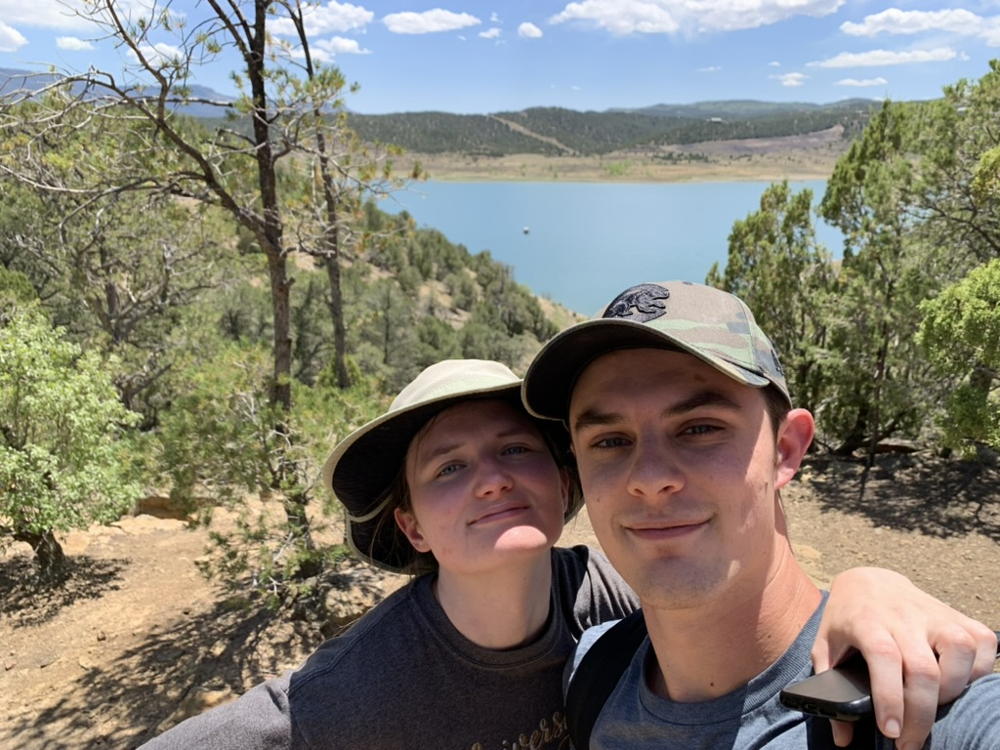

Graduate Student Teaching Fellow
Department of Mathematics
University of North Texas
About Me
I am a PhD student studying mathematics at the University of North Texas (UNT) in Denton, TX. I also obtained a B.S. in mathematics at UNT.
Research InterestsMy main research interest is numerical methods for nematic liquid crystals, and other phase field models. Specifically, I have been working on building numerical methods for simulating nematic liquid crystals using a Q-tensor model. In addition, I have also worked on numerical methods for the Cahn-Hilliard phase field model. |
 | Cassidy and me hiking in Trinidad Colorado in Summer 2022. |